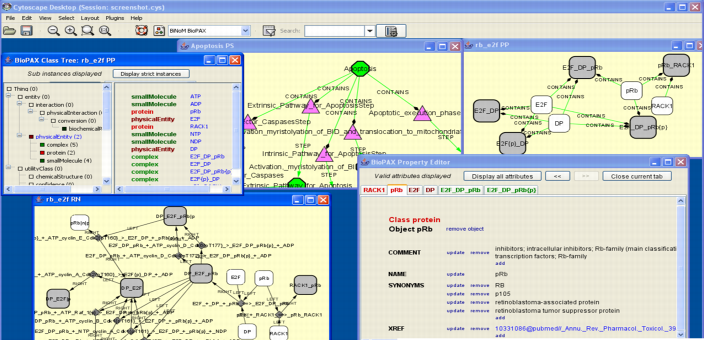
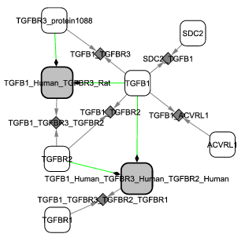
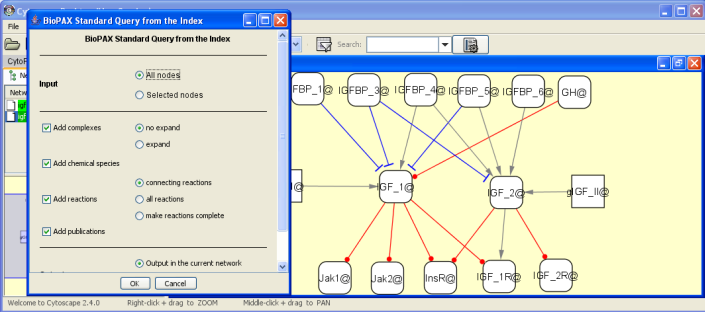
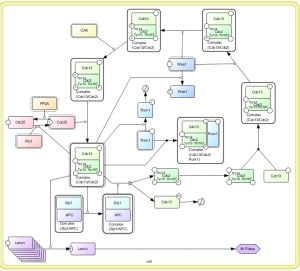
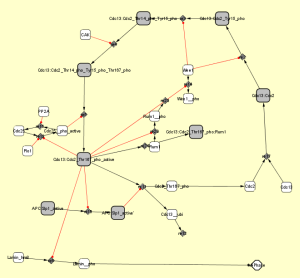

Introduction
BiNoM ( Biological Network Manager ) is a Cytoscape plugin developed by the
Computational Systems Biology of Cancer group in
Bioinformatics Laboratory of Institut Curie (Paris).
BiNoM is a Cytoscape plugin,
developed to facilitate the manipulation of biological networks
represented in standard systems biology formats (SBML, SBGN, BioPAX) and to carry out
studies on the network structure. BiNoM provides the user with a
complete interface for the analysis of biological networks in
Cytoscape environment.
BiNoM software supports the following functions:
- Import of BioPAX, SBML and CellDesigner formats
- Export to BioPAX, SBML and CellDesigner formats after user manipulations
- Conversion between standards (CellDesigner->BioPAX, BioPAX->SBML)
- Full support of BioPAX information (reaction network, interaction network, pathway structure, references),
concept of BioPAX index and network interfaces
- Browsing, editing, extracting parts, merging BioPAX files with network graph interface
- Structural analysis of the networks (strongly connected components, path and cycle analysis, network clustering, etc.)
- Support of generating network modular view
- BioPAX network query system: allows to work with huge BioPAX files (such as whole Reactome or NetPath)
- Some general purpose utilities not yet implemented in Cytoscape (clipboard operations, network updating, etc.)
More information in
Downloads
BiNoM can be installed in several ways:
* Easy As a Cytoscape plug-in file with all libraries included (stable release) Download, 25M
Current experimental BiNoM release
Installation procedure: just copy BiNoM_all.jar into the 'plugin/' folder of Cytoscape (you should also remove all previous BiNoM versions from this folder).
Important note: This version can be used only with versions 2.7.x and 2.8.x of Cytoscape.
If you use Cytoscape version 2.4.* or below, you have to follow these steps:
- Download the old version of BiNoM.
- Remove (or, better, rename and keep)
xercesImpl.jar from 'lib/' folder of Cytoscape (since it is not compatible with the version of the same
jar used by Jena in BiNoM).
Important note: Some browsers automatically rename the BiNoM_all.jar to BiNoM_all.zip
after the download. Do not unpack the .zip file but rather rename it back to BiNoM_all.jar and copy into the plugin/ Cytoscape folder.
* Using Cytoscape plugin manager
- Launch the Cytoscape plugin manager (menu "Plugins -> Manage Plugins").
- Go to the category "Other".
- Select the latest version of BiNoM (currently 2.2).
- Click "Install".
- Restart Cytoscape.
* Library As stand-alone jar for file conversions, structural analysis, etc. (Jena, Jastor and XmlBeans are included) Download, 25M
(examples of use)
Documentation and source code
Screenshots
 

 
BiNoM working group
- Andrei Zinovyev
- Eric Bonnet
- Laurence Calzone
- Daniel Rovera
- Gautier Stoll
- Eric Viara
- Philippe La Rosa
- Emmanuel Barillot
Contacts
Acknowledgements
This project was partly funded by the EC contract ESBIC-D
(LSHG-CT-2005-518192), the PIC Bioinformatique et Biostatistiques
from Institut Curie, the Research Networks Program in
Bioinformatics from the High Council for Scientific and
Technological Cooperation between France and Israel, and the APO-SYS FP7 European program.
|